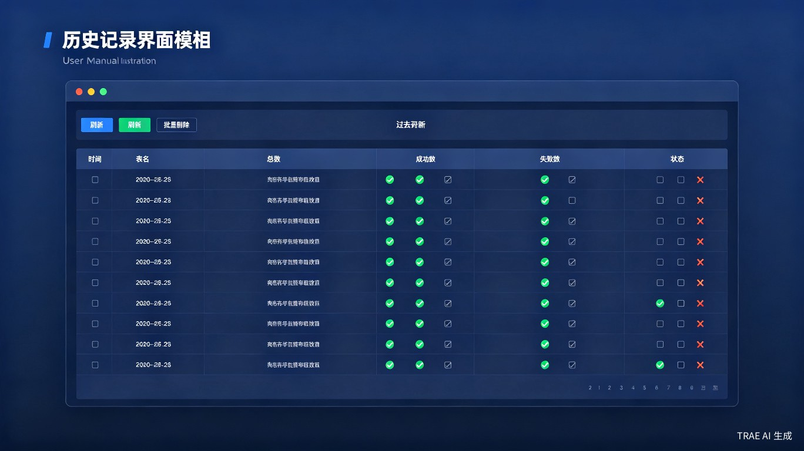

4. 功能详解
4.1 当前配置标签页
这是主要操作界面，包含配置区域、Excel 文件区域、预览区域和操作按钮。
4.1.1 配置区域
| 字段 | 说明 | 备注 |
|---|
| 目标表模式 | 目标表所在的数据库模式 | 支持手工填写，可点击 ⚙ 配置选项 |
| 临时表模式 | 临时表所在的数据库模式 | 可与目标表不同，支持手工填写 |
| 目标表名 | 要更新的数据库表名 | 必填 |
| 唯一标识列 | Excel 第 1 列对应的数据库列名 | 用于匹配记录 |
| 待修改列 | 要更新的列列表 | 点击「➕」添加，「➖」删除，顺序与 Excel 一致 |
4.1.2 Excel 文件区域
- 选择文件：点击「浏览」选择 Excel 文件
- 预览：查看 Excel 前 50 行数据
限制：最大 10 MB，最多 10 万行，使用 .xlsx 格式。
4.1.3 操作按钮
| 按钮 | 功能 | 说明 |
|---|
| 🔍 验证数据 | 验证 Excel 结构和数据库表/列 | 全部通过后启用执行按钮 |
| ✅ 执行 | 开始更新操作 | 初始禁用，验证通过后启用 |
| 🗑 清空 | 清空表单 | 重置所有配置字段 |
4.2 操作日志标签页
- 显示所有操作日志，按时间倒序排列
- 日志级别：
- INFO — 信息
- SUCCESS — 成功（绿色）
- WARNING — 警告（黄色）
- ERROR — 错误（红色）
- 导出日志：导出所有日志
- 导出失败记录：导出更新失败的记录
- 清空日志：清空当前显示
4.3 数据库连接标签页
- 连接下拉框：选择已保存的连接
- 测试连接：测试选中的连接
- 添加连接：添加新的数据库连接
- 删除连接：删除当前选中的连接
- 连接信息显示区域：显示当前连接的详细信息
4.4 历史记录标签页

图4-3：历史记录标签页
- 显示所有更新操作记录
- 包含：时间、表名、总数、成功数、失败数、状态
- 支持刷新和批量删除
4.5 状态栏
从左到右依次显示：
- 连接名称（加粗）：当前选中的数据库连接
- 用户：当前数据库用户
- 数据库：当前连接的数据库
- 连接状态：指示灯 + 文字（🔴 未连接 / 🟢 已连接）
- 操作状态：当前正在执行的操作
- 操作系统版本（最右侧）：如 Windows 10 (64bit) / Linux 6.8.0，服务器版加 [服务器版] 标记
4.6 主题切换
系统提供三套主题风格，每套均支持浅色/深色模式，共六种视觉方案。默认风格为深墨琥珀。
风格按钮（位于顶部控制栏"主题:"标签之后）
- 点击
深墨🖥 切换到深墨琥珀（深墨蓝 + 琥珀金，默认）
- 点击
Idea💡 切换到 Idea 蓝色（IntelliJ IDEA 风格）
- 点击
清爽✨ 切换到清爽浅色（清新蓝白，简约现代）
深浅色按钮（位于风格按钮右侧）
🌙 深色模式 — 点击后切换到当前风格的深色变体☀️ 浅色模式 — 点击后切换到当前风格的浅色变体
按钮选中态：当前风格按钮背景使用 primary 主色高亮，与未选中按钮形成视觉区分。
持久化：主题设置自动写入 config.json 的 theme_style / theme_dark 字段；下次启动程序自动恢复。
4.7 快捷键
| 快捷键 | 功能 |
|---|
| Ctrl + S | 保存当前配置 |
| ← / → | 切换标签页（循环切换：当前配置 → 操作日志 → 数据库连接 → 历史记录） |
| ↑ / ↓ | 纵向滚动当前标签页内容（支持日志文本、历史记录表格等可滚动控件） |
4.8 配置场景
配置场景功能允许您保存常用的配置组合，下次使用时可直接加载，无需手工填写。
使用场景
- 经常对同一张表进行批量更新
- 需要更新多个相同的列
- 固定的数据库连接和模式
操作步骤
保存场景
- 填写好目标表名、唯一标识列、待修改列等配置
- 点击「💾 保存为场景」按钮
- 输入场景名称（必填，不超过 100 字符）和描述（可选）
- 点击「保存」
加载场景
- 从下拉列表选择目标场景
- 点击「📂 加载」按钮
- 配置将自动填充到对应字段
删除场景
- 从下拉列表选择要删除的场景
- 点击「🗑 删除」按钮
- 确认删除
注意：场景名称不能为空，不超过 100 字符，同名场景会提示覆盖确认。